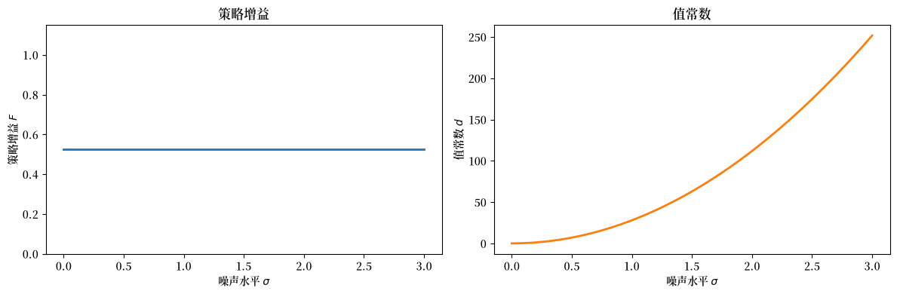
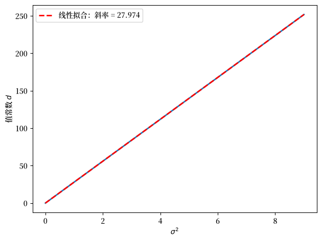

81. 确定性等价#
除了 Anaconda 中已有的库之外，本讲座还需要以下库：
!pip install quantecon
import numpy as np
import matplotlib.pyplot as plt
from quantecon import LQ
import matplotlib as mpl # i18n
FONTPATH = "fonts/SourceHanSerifSC-SemiBold.otf" # i18n
mpl.font_manager.fontManager.addfont(FONTPATH) # i18n
mpl.rcParams['font.family'] = ['Source Han Serif SC'] # i18n
81.1. 概述#
Simon [1956] 和 Theil [1957] 为线性二次（LQ）动态规划问题建立了著名的确定性等价（CE）性质。
他们的结果证明了一种便捷的两步算法是合理的：
优化——在完全预见下进行优化（将未来外生变量视为已知）。
预测——用最优预测替代未知的未来值。
其惊人的洞见在于，这两个步骤是完全可分离的。
从第 1 步得出的决策规则与原始随机问题的决策规则完全相同，只要在第 2 步中代入最优预测即可。
决策规则不依赖于冲击的方差，但最优值函数的水平却依赖于它。
在详细描述确定性等价性质的结构之后，本讲座将描述其在理性预期建模中的作用。
我们在此大量借鉴了 Lucas and Sargent [1981] 的引言。
除了学习确定性等价原理外，本讲座还描述了 Lucas [1976] 所述的前理性预期计量经济政策评估程序所存在的问题。
备注
该卷收录了关于理性预期建模与计量经济学的早期论文。
81.2. 实证经济学的一个核心问题#
为了铺垫背景，Lucas and Sargent [1981] 陈述了由 Leonid Hurwicz（[Hurwicz, 1962]）提出的实证经济学核心问题：
给定对某个特定经济环境中某主体行为的观测，如果环境发生了改变，我们能推断出该行为会有何不同吗？
备注
Hurwicz 将”因果关系”的概念表述为一个依赖于具体情境的概念，并将其置于一个良好定义的决策问题的框架下加以阐述。
这就是在以下情境中的策略不变结构推断问题。
观测是在一种环境或”制度”下产生的
我们想要预测在另一种”制度”下的行为
除非我们理解主体在历史制度中为何如此行事，即他们的目的，否则我们无法预测他们在新制度所面临约束下的行为。
为了面对 Hurwicz 提出的问题，Lucas and Sargent [1981] 构建了以下决策框架。
81.3. 形式化的设定#
考虑一个单一的决策者，其在日期 \(t\) 的状况由两个状态变量 \((x_t, z_t)\) 完全描述。
环境 \(z_t \in S_1\) 由”自然”选定，并按照以下方式外生地演化
其中创新项 \(\{\epsilon_t\}\) 是从固定 CDF \(\Phi(\cdot) : \mathcal{E} \to [0,1]\) 中独立同分布抽取的。
函数 \(f : S_1 \times \mathcal{E} \to S_1\) 被称为决策者的环境。
内生状态 \(x_t \in S_2\) 部分处于主体的控制之下。
每一期主体选择一个动作 \(u_t \in U\)。
一个固定的技术 \(g : S_1 \times S_2 \times U \to S_2\) 支配着转移
决策规则 \(h : S_1 \times S_2 \to U\) 将主体的当前状况映射为一个动作：
计量经济学家观测到过程 \(\{z_t, x_t, u_t\}\)（的部分或全部），其联合运动由 (81.1)、(81.2) 和 (81.3) 决定。
81.4. 仅有估计的规则是不够的#
假设我们已从一个在固定环境 \(f_0\) 下生成的长时间序列中估计出了 \(f\)、\(g\) 和 \(h\)。
这给出了 \(h_0 = T(f_0)\)，其中 \(T\) 是将环境映射到最优决策规则的（未知）泛函映射。
但无论这个单一估计多么精确，它都无法揭示关于 \(T(f)\) 如何随 \(f\) 变化的任何信息。
策略评估需要了解整个映射 \(f \mapsto T(f)\)。
在环境变化 \(f_0 \to f_1\) 下，主体通常会修正他们的决策规则 \(h_0 \to h_1 = T(f_1)\)，从而使估计出的规则 \(h_0\) 无法用于预测 \(f_1\) 下的行为。
Lucas [1976] 和 Lucas and Sargent [1981] 的引言得出结论：唯一可行的非实验路径是恢复回报函数 \(V\)——\(h\) 是作为该优化问题的解从中推导出来的——然后在反事实环境 \(f_1\) 下重新求解该问题。
81.5. 一个优化问题#
假设主体选择 \(h\) 以最大化当期回报 \(V : S_1 \times S_2 \times U \to \mathbb{R}\) 的期望贴现总和：
给定初始条件 \((z_0, x_0)\)、环境 \(f\) 和技术 \(g\)。
这里 \(E_0\{\cdot\}\) 表示在给定 \((z_0, x_0)\) 的条件下，关于由 (81.1) 所诱导的 \(\{z_1, z_2, \ldots\}\) 分布的期望。
原则上，对 \(V\) 的了解（连同 \(g\) 和 \(f\)）使人们能够在理论上计算 \(h = T(f)\)，从而对任何反事实的 \(f\) 追踪出 \(T(f)\)。
本质的问题在于，\(V\) 本身能否从对 \(\{f, g, h\}\) 的观测中恢复出来。
备注
决策规则一般是一个泛函 \(h = T(f, g, V)\)。 在正文中对 \(g\) 和 \(V\) 的依赖被略去了，但在需要时会显式表明。
81.6. 一个线性二次动态规划问题与确定性等价#
要超越上一节的一般性水平取得进展，需要对基本要素加以限制。
在 Lucas and Sargent [1981] 所收录的论文中所采用的一种富有成效的限制是，令 \(V\) 为二次的、\(g\) 为线性的，这就迫使 \(h\) 成为线性的。
作为其计算易处理性的一部分，这种特殊化给出了一个惊人的结构性结果：
81.6.1. \(h\) 的分解#
在二次 \(V\) 和线性 \(g\) 的条件下，最优决策规则 \(h\) 分解为按顺序应用的两个组成部分。
第 1 步——预测。 定义对所有当前及未来自然状态的最优点预测的无穷序列：
其中 \({}_{t+j}z_t^e\) 表示在时刻 \(t\) 形成的对 \(z_{t+j}\) 的最小均方误差预测。
最优预测序列是当前状态的一个（通常是非线性的）函数：
函数 \(h_2 : S_1 \to S_1^\infty\) 完全依赖于环境 \((f, \Phi)\)，并且作为一个纯预测问题的解而获得，与偏好或技术无关。
第 2 步——优化。 给定预测序列 \(\tilde{z}_t\)，最优动作是 \(\tilde{z}_t\) 和 \(x_t\) 的一个线性函数：
函数 \(h_1 : S_1^\infty \times S_2 \to U\) 完全依赖于偏好 \((V)\) 和技术 \((g)\)，而不依赖于随机环境 \((f, \Phi)\)。
因此，最终的决策规则是复合：
81.6.2. 分离原理#
(81.8) 体现了 \(h\) 中两个依赖来源的清晰分离：
组成部分 |
依赖于 |
独立于 |
|---|---|---|
\(h_1\)（优化） |
\(V\)、\(g\) |
\(f\)、\(\Phi\) |
\(h_2\)（预测） |
\(f\)、\(\Phi\) |
\(V\)、\(g\) |
由于策略分析关注的是 \(f\) 的变化，而 \(h_1\) 对 \(f\) 保持不变，策略分析者只需在新环境下重新求解预测问题 \(h_2 = S(f)\)，同时保持 \(h_1\) 固定。
最初关注的关系 \(h = T(f)\) 随后即可直接由 (81.8) 得出。
81.6.3. 确定性等价与完全预见#
“确定性等价”这一名称反映了 LQ 结构的一个进一步含义：函数 \(h_1\) 可以像主体确定地知道未来路径 \(z_{t+1}, z_{t+2}, \ldots\) 那样推导出来——即通过求解确定性问题，其中 \(\tilde{z}_t\) 被视为实现的路径而非预测。
环境的随机性仅通过预测 \(\tilde{z}_t\) 影响动作；给定 \(\tilde{z}_t\)，优化问题就是确定性的。
这意味着 LQ 问题解耦为：
完全预见下的动态优化——通过将 \(\tilde{z}_t\) 视为已知，从 \((V, g)\) 求解 \(h_1\)，得到一个标准的确定性 LQ 调节器问题，它独立于环境 \((f, \Phi)\)。
最优线性预测——使用最小二乘预测理论从 \((f, \Phi)\) 求解 \(h_2 = S(f)\)，当 \(f\) 本身是线性的时，这就归结为标准的卡尔曼/维纳预测公式。
81.6.4. 跨方程约束#
理性预期假设在此框架中呈现的一个标志性特征是，它将本来在不同方程中会是自由参数的东西联系在一起。
\(\tilde{z}_t = h_2(z_t) = S(f)(z_t)\) 的要求——即主体的预测相对于实际的运动规律 \(f\) 是最优的——在预测规则 \(h_2\) 的参数与环境 \(f\) 的参数之间强加了跨方程约束。
正是这些约束，而非任何关于单个方程内分布滞后的条件，才是理性预期起作用的经验内容。
以下代码在数值上验证了 CE 原理。
我们考虑一个简单的标量 LQ 问题：
并在一个宽泛的范围内改变噪声标准差 \(\sigma\)。
CE 定理预测：
策略增益 \(F\)（即 \(u_t = -F y_t\) 中的系数）独立于 \(\sigma\)，并且
值常数 \(d\)（即 \(V(y) = -y^\top P y - d\) 中的加性项）随 \(\sigma\) 增长。
a, b_coeff = 0.9, 1.0
q, r = 1.0, 1.0
β = 0.95
A = np.array([[a]])
B = np.array([[b_coeff]])
R_mat = np.array([[q]]) # 状态成本
Q_mat = np.array([[r]]) # 控制成本
σ_vals = np.linspace(0.0, 3.0, 80)
F_vals, d_vals = [], []
for σ in σ_vals:
C = np.array([[σ]])
lq = LQ(Q_mat, R_mat, A, B, C=C, beta=β)
P, F, d = lq.stationary_values()
F_vals.append(float(F[0, 0]))
d_vals.append(float(d))
fig, axes = plt.subplots(1, 2, figsize=(12, 4))
axes[0].plot(σ_vals, F_vals, lw=2)
axes[0].set_xlabel('噪声水平 $\\sigma$')
axes[0].set_ylabel('策略增益 $F$')
axes[0].set_title('策略增益')
axes[0].set_ylim(0, 2 * max(F_vals) + 0.1)
axes[1].plot(σ_vals, d_vals, lw=2, color='C1')
axes[1].set_xlabel('噪声水平 $\\sigma$')
axes[1].set_ylabel('值常数 $d$')
axes[1].set_title('值常数')
fig.tight_layout()
plt.show()
findfont: Failed to find font weight normal, now using 600.
findfont: Failed to find font weight normal, now using 600.
findfont: Failed to find font weight normal, now using 600.

图 81.1 CE：策略不依赖于噪声#
正如图所证实的那样，\(F\)（策略增益）在所有噪声水平上都是平坦的，而值常数 \(d\) 随 \(\sigma\) 单调增加。
这就是 CE 原理的实际体现：不确定性改变了问题的值，但没有改变最优决策规则。
81.7. 特设预期的一个问题#
先前的做法，以 Friedman [1956] 和 Cagan [1956] 的适应性预期机制为例，直接假设了 (81.6) 的一种特定形式：
将系数 \(\lambda\) 视为一个待从数据中估计的自由参数，而不参考底层环境 \(f\)。
其缺陷不在于 (81.9) 是一个分布滞后——线性预测规则是完全可以接受的简化。
缺陷在于分布滞后的系数未受理论约束。
映射 \(h_2 = S(f)\) 表明，最优预测系数是由 \(f\) 决定的：当 \(f\) 改变时，\(h_2\) 改变，\(h\) 也随之改变。
因此，在 \(f_0\) 下校准的估计 \(\lambda\) 是非结构性的，只要 \(f\) 发生改变，它就会给出不正确的预测。
这就是 Muth [1960] 所发表批评的计量经济学内容。
理性预期将主体在形成 \(\tilde{z}_t\) 时所使用的主观分布等同于实际生成数据的客观分布 \(f\)，从而闭合模型并消除 \(h_2\) 中的自由参数。
81.8. 练习#
练习 81.1
使用上面代码单元中的标量 LQ 设定（其中 \(a = 0.9\)、\(b = 1\)、 \(q = r = 1\)、\(\beta = 0.95\)），在数值上验证值常数 \(d\) 满足 \(d \propto \sigma^2\)。
提示： 从 CE 分析来看，值常数满足 \(d = \tfrac{\beta}{1-\beta}\,\mathrm{tr}(C^\top P C)\)， 并且由于在标量情况下 \(C = \sigma\)，这给出 \(d = \tfrac{\beta}{1-\beta}\, P\, \sigma^2\)。
确认 \(d\) 关于 \(\sigma^2\) 的图是线性的，并计算理论 斜率 \(\tfrac{\beta}{1-\beta} P\)。
解答 练习 81.1
σ_sq_vals = σ_vals ** 2
fig, ax = plt.subplots()
ax.plot(σ_sq_vals, d_vals, lw=2)
ax.set_xlabel('$\\sigma^2$')
ax.set_ylabel('值常数 $d$')
coeffs = np.polyfit(σ_sq_vals, d_vals, 1)
ax.plot(σ_sq_vals, np.polyval(coeffs, σ_sq_vals),
'r--', lw=2, label=f'线性拟合：斜率 = {coeffs[0]:.3f}')
ax.legend()
fig.tight_layout()
plt.show()
P_scalar = float(LQ(Q_mat, R_mat, A, B, C=np.zeros((1, 1)),
beta=β).stationary_values()[0].item())
theoretical_slope = β / (1 - β) * P_scalar
print(f"经验斜率: {coeffs[0]:.4f}")
print(f"理论斜率 β/(1-β)*P = {theoretical_slope:.4f}")

经验斜率: 27.9740
理论斜率 β/(1-β)*P = 27.9740
斜率确实是 \(\tfrac{\beta}{1-\beta} P\)，从而证实了这个解析公式。
值矩阵 \(P\) 完全由偏好和技术决定，而不由噪声水平决定——这是确定性等价原理的一个直接结果。
81.9. 结束语#
本讲座的续篇 确定性等价与模型不确定性 描述了如何将确定性等价原理扩展到一个线性二次的设定中，在该设定中决策者不信任其基准模型所设定的转移动态。